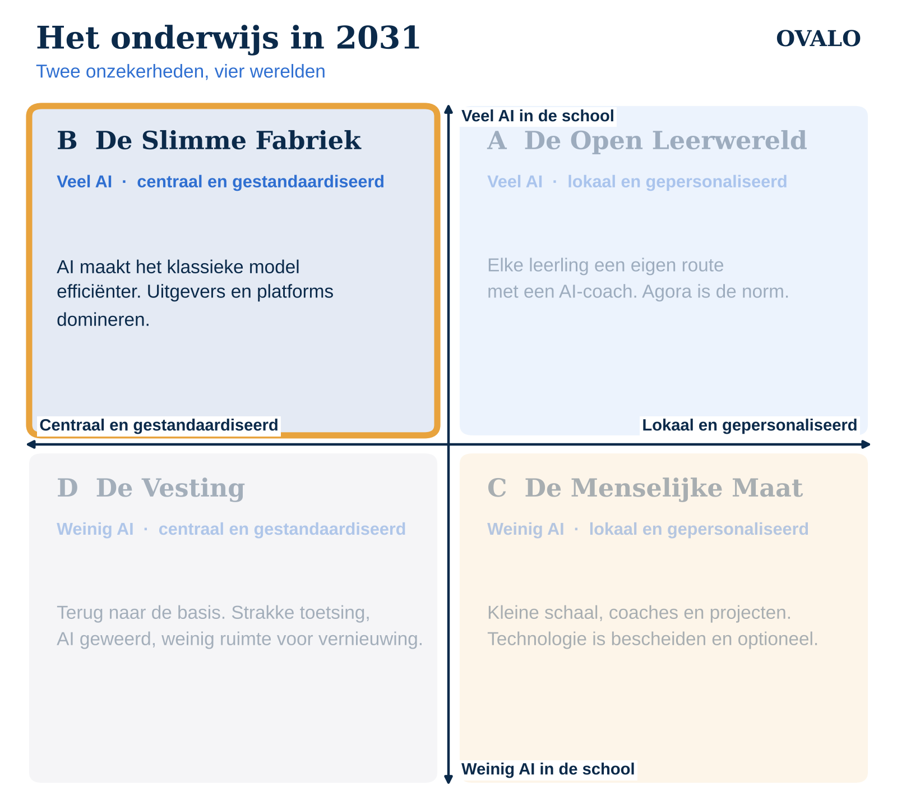

Dit is deel 3 van de reeks “Het onderwijs in 2031”. In het eerste artikel lees je hoe de vier scenario's tot stand komen. Dit scenario: veel AI in de school, binnen een centraal en gestandaardiseerd systeem.

Een maandagochtend in 2031
Het rooster staat vast: 50 minuten wiskunde, 50 minuten Engels. Elke leerling krijgt op zijn tablet opgaven die precies passen bij zijn niveau. Het systeem herkent waar Daan steeds dezelfde fout maakt en biedt meteen extra oefening aan. Huiswerk wordt automatisch nagekeken.
De docent ziet op een dashboard wie achterloopt. Ze hoeft minder na te kijken en heeft meer tijd voor de leerlingen die het echt nodig hebben. Aan het einde van het jaar maakt iedereen dezelfde landelijke toets. De resultaten zijn beter vergelijkbaar dan ooit.
Hoe ziet deze wereld eruit?
- Methodes en toetsen blijven leidend. Landelijke kerndoelen en vergelijkbare resultaten bepalen wat er in de klas gebeurt.
- AI zit in de methode. Uitgevers leveren adaptieve oefenomgevingen, automatische feedback en uitgebreide rapportages.
- Grote partijen domineren. Scholen kopen via collectieven en aanbestedingen. Kleine aanbieders komen er moeilijk tussen.
- Strenge regels. De Europese AI-verordening merkt AI voor onder meer het beoordelen van leerlingen aan als hoog risico. Leveranciers moeten veel aantonen; scholen worden voorzichtiger.
Wat er te winnen valt
Dit scenario lost echte problemen op. Het lerarentekort wordt deels opgevangen doordat nakijkwerk en differentiatie automatisch gaan. Leerlingen krijgen oefening op hun eigen niveau, ook in een klas van dertig. En scholen kunnen beter verantwoorden wat ze doen.
Waar het mis kan gaan
- Efficiënt, maar waarvoor? Een systeem dat beter wordt in het oefenen voor de toets, leidt niet vanzelf tot leerlingen die zelfstandig kunnen denken, samenwerken of creatief zijn.
- AI als antwoordmachine. Als AI vooral antwoorden geeft, leren leerlingen vooral hoe ze antwoorden krijgen.
- Minder ruimte voor vernieuwing. Scholen die anders willen werken, moeten zich steeds verantwoorden binnen een systeem dat op standaardisatie is gebouwd.
- Afhankelijk van enkele leveranciers. De didactiek wordt grotendeels bepaald door wie de methode maakt.
Wat kun je als school nu al doen?
- Stel eisen aan AI in methodes. Vraag uitgevers hoe hun AI werkt: geeft ze antwoorden, of laat ze leerlingen zelf nadenken?
- Zorg dat privacy op orde is. Het Convenant Digitale Onderwijsmiddelen en Privacy en een goede verwerkersovereenkomst zijn in deze wereld de basis.
- Bewaak ruimte voor eigen keuzes. Ook binnen een strak systeem kun je vrije ruimte houden voor projecten of keuzewerktijd.
- Kijk verder dan de toets. Leg ook vast hoe leerlingen groeien in vaardigheden die niet in een toets passen.
Tot slot
De Slimme Fabriek klinkt als een tegenstelling, maar is voor veel scholen een realistische richting. De vraag is niet óf AI erin komt, maar wélke AI. Bij Ovalo bouwen we daarom aan BoekAI: AI in het schoolboek die begeleidt in plaats van voorzegt, zodat ook binnen een bestaande methode het denken bij de leerling blijft.
Volgende week: De Menselijke Maat, waarin scholen juist kiezen voor minder techniek.